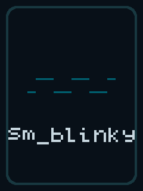
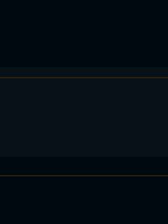

顶栏
大环 arc 160×160
大数字
单位
卡片 A 电池
卡片 B 里程
assist
帧时间
槽 0 · 夜色仪表 —— demo 页背景（默认）

顶栏
大环 arc 160×160
大数字
单位
卡片 A 电池
卡片 B 里程
assist
帧时间
槽 1 · 网格科技 —— 已进 flash 但当前没有页面显示

槽 2 · 开机展示页 —— 上电先看它 1.5 s，不叠布局锚点
.png（给你看）与 .rgb565（LVGL 原生格式，153,600 B/张）。Asset_load() 把三张全部搬进外挂 SRAM（460,800 B、一次搬运、单 CRC 校验），运行时只有两张被显示：
槽 0 是 demo 页背景、槽 2 是开机展示页，槽 1（bg-b）目前空转。LV_OPA_80）。


| 槽 | 文件 | 名字 | 风格 | PNG B | RGB565 B | 单张 CRC32 | 用途（2026-10-12） |
|---|---|---|---|---|---|---|---|
| 槽 0 | bg-a | 夜色仪表 | 垂直渐变 + 环区光晕 + 暗角 | 2,633 | 153,600 | 0x9CEB9397 | demo 页背景 —— 在显 |
| 槽 1 | bg-b | 网格科技 | 24 px 网格 + 斜向光带 + 暗角 | 1,917 | 153,600 | 0xF0CE9B4D | 当前没有任何页面显示 |
| 槽 2 | bg-logo | 开机展示页 | 深底 + 圆角边框 + 方波 + 5×7 点阵字 sm_blinky | 1,027 | 153,600 | 0x1E1733AF | Splash 首帧 —— 在显（上电先看它 1.5 s） |
| — | bg-c | 暮色准照片 | 斜向渐变 + 冷暖光斑 + 重暗角 | 697 | 153,600 | 0x17707D95 | 候选，不在板上 |
| 板上载荷 = 槽 0+1+2 首尾相接（bg-a + bg-b + bg-logo） | 460,800 | 0x7BE8D093 | 整载荷一次搬运、单 CRC 校验（asset.c） | ||||
BSP_dbgBootMs_ 标记差）：
payload 读 263 ms（1.75 MB/s，差的 ~58 ms 是分块开销；块已试到 32→64 KB 上限、无改善 ✗）+ CRC32 205 ms（逐字节）⇒
资产段合计 468 ms，加面板段 411 ms ⇒ 暖复位到资产就位 879 ms。3rd_party/common_c。
| 方案 | flash 占用 | 启动加载 | LVGL 侧 | 代价 |
|---|---|---|---|---|
| B1 · 裸 RGB565（采用 ✓） | 460,800 B（450 KB） | 204.8 ms 线速 / 实测 263 ms | SRAM 里就是原生格式，lv_image_dsc_t 直接指过去，零解码 | flash 占 450 KB |
| B2 · RLE 压缩 + 启动解压到 SRAM | ≈ 12–28 KB/张，合 ≈ 60 KB | flash 读 ≈ 27 ms + 解压（未实测） | 解压后同样是 SRAM 里的原生 RGB565，LVGL 无感 | 要在 app 里写解压；多一段 CPU 时间 |
| B3 · 让 LVGL 直接读压缩资产 | ≈ 60 KB | 0（不预载） | LVGL 每帧逐像素解码 | 不建议每帧解码 + 混合，刷新会被拖垮 |
./bg/ 共 8 个文件（bg-a / bg-b / bg-c / bg-logo 各一份 .png + .rgb565，小端 RGB565）。gen_bg.py（三张背景）+ gen_logo.py（开机图），都在本目录，纯标准库；本页由 gen_bg_preview.py 生成。tools/burn-asset.py（Windows 侧，CH340 = COM12）把三槽拼成 460,800 B 经 bootloader 写进 NOR 0x00081000。Asset_.crc32（J-Link）＝ SRAM 槽头 ＝ 仓库拼出来的 0x7BE8D093 ✓。